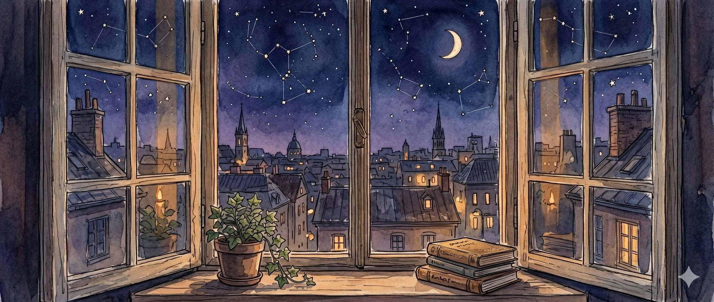

Writing
The other homeI write fiction sometimes, mostly for myself since they are too cringe lol — though I'm learning to share it by embracing the cringe-ness. It sits at the intersection of myth, geopolitics, and the feelings I can't put anywhere else, or feelings that simply haven't got words to describe, haven't been named.
The Desk / active_files

The Spratly Gambit
A geopolitical thriller set in near-future Southeast Asia. A Vietnamese junior diplomat navigates a crisis over rare earth minerals in disputed waters. Part political fiction, part love letter to the region.

The Third Arch
A prose triptych — three movements, one story. A myth rewritten from the inside, filtering the Artemis archetype through something that actually happened to me.
The Drawer / loose_papers

Civilizational Grief
Trying to put words to the specific kind of melancholy you feel when looking at the trajectory of things bigger than yourself.
Read essay →
Airports as Intersections
The realization of airports as a kind of civilizational intersection. Everyone is from everywhere, going everywhere, yet we're all just eating overpriced sandwiches in a liminal space.
Read note →
City Lights Behind a Taxi Window
There is a very specific feeling of loneliness that only exists in the back of a Grab car at 11 PM in Jakarta. The city moves past you, completely indifferent.
Read note →
Homesickness, properly defined
Sometimes it's not missing a place, but missing the version of yourself that existed in that place.
Read note →More notes piled up somewhere...
I have about 40 unfinished drafts in my Notes app. As soon as I figure out how to end them, I'll put them in this drawer.